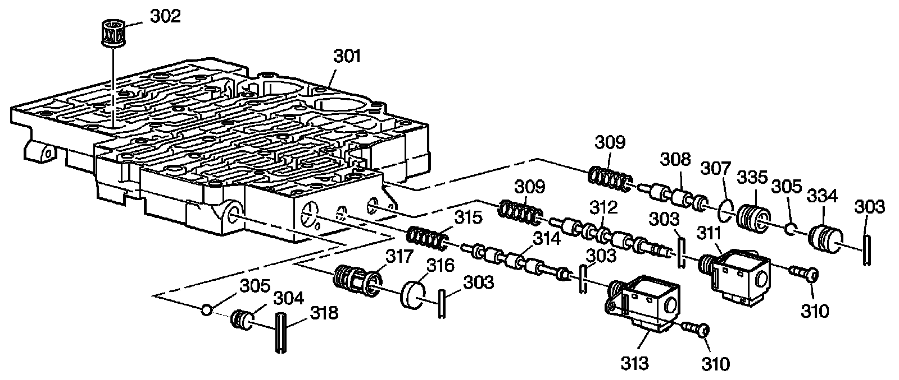
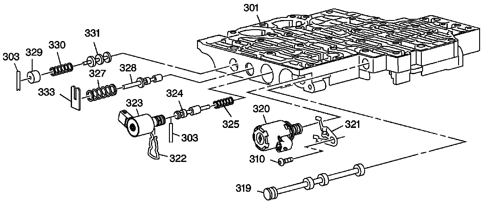

4L80-E/4L85-E - Automatic Transmission
Disassembled Views
Control Valve Body Assembly (1 of 2):

301 - Control Valve Body
302 - Pressure Control Solenoid Valve Fluid Filter Assembly
303 - Shift Valve Fluid Filter Bore Plug Pin
303 - Shift Valve Fluid Filter Bore Plug Pin
303 - Shift Valve Fluid Filter Bore Plug Pin
303 - Shift Valve Fluid Filter Bore Plug Pin
304 - Low-Reverse Ball Valve Seat
305 - Low-Reverse Ball Valve
305 - Low-Reverse Ball Valve
307 - 3rd Ball Valve Bushing Seal
308 - 3-4 Shift Valve
309 - 2-3, 3-4 Shift Valve Spring
309 - 2-3, 3-4 Shift Valve Spring
310 - Solenoid Bolt (1-2 and 2-3 Shift Valve)
310 - Solenoid Bolt (1-2 and 2-3 Shift Valve)
311 - 2-3 Shift Solenoid Valve Assembly
312 - 2-3 Shift Valve
313 - 1-2 Shift Solenoid Valve Assembly
314 - 1-2 Shift Valve
315 - 1-2 Shift Valve Spring
316 - Shift Valve Fluid Filter Bore Plug
317 - Shift Solenoid Valve Fluid Filter Assembly
318 - Low-Reverse Ball Valve Seat Pin
334 - Reverse Ball Valve Bushing
335 - 3rd Ball Valve Bushing
Control Valve Body Assembly (2 of 2):

301 - Control Valve Body
303 - Shift Valve Accumulator Valve Bore Plug Pin
303 - Shift Valve Accumulator Valve Bore Plug Pin
310 - Pressure Control Solenoid Clamp Bolt
319 - Manual Valve
320 - Pressure Control Solenoid Valve Assembly
321 - Pressure Control Solenoid Clamp
322 - TCC PWM Solenoid Valve Retainer
323 - TCC PWM Solenoid Valve Assembly
324 - TCC Regulator Apply Valve
325 - TCC Regulator Apply Valve Spring
327 - Actuator Feed Limit Valve Spring
328 - Actuator Feed Limit Valve
329 - Accumulator Valve Bore Plug
330 - Accumulator Valve Spring
331 - Accumulator Valve
333 - Actuator Feed Limit Valve Spring Retainer